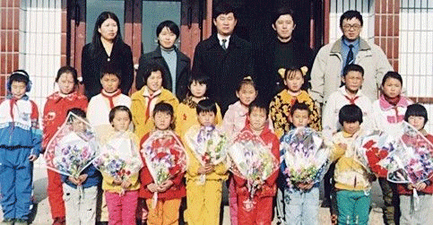

齐齐哈尔泰来县五桥村小学
·1998年禾丰资助修建的齐齐哈尔泰来县五桥村小学

寒风中孩子们摇动手中花束欢迎我们
1998年8月嫩江、松花江流域遭遇特大洪水，几百亿立方米洪水横扫松嫩平原，造成大量房屋倒塌和农田被淹，经济损失严重。金卫东董事长、王仲涛副总裁以及几位高管带着二十万现金，深入黑龙江省受灾最严重的泰来县，捐助一所希望小学。下面这篇文章是由当时同行的赵文馨总监所写，记录了那令人终身难忘的时刻……
1998年底，禾丰公司在黑龙江泰来县大兴镇出资十万元赞助当地政府建立禾丰希望小学，一年来，希望小学是否建立，状况如何，一直牵挂着众多禾丰人的心。
99年十月底，我们接到泰来县政府的邀请，于11月4日踏上了赴泰列车，参加希望小学落成典礼。越往北走，越觉得寒冷，半夜里冷醒了，难以入眠。打开窗帘，外面漆黑一片，除了偶尔一个小小的车站，几乎看不到任何建筑。泰来县处于黑龙江和吉林的交界，全国五百贫困县之一，没有什么资源，只有勉强长草的盐碱地，明天我们会看到什么样的学生，什么样的学校呢？我不断地猜测着。对于希望小学，我们（同去的还有农大禾丰财务经理高斐小姐）唯一印象就是那幅著名的摄影，一个女孩在破旧的书桌前，手里握着笔，抬着头，如小鹿般清澈无肋的双眼看着镜头，那眼神让人很心酸，题为“我要读书”。也许，我们将要面对的就是这样的一双双眼睛，想到即将面对的场面，我心中既充满了渴望，更有不愿目睹落后的胆怯。
清晨，我们走出了泰来车站，一位中年知识分子向我们走来，并伸出了双手，“是禾丰的吧？快，快上车”。谈话中知道，他是大兴镇中心学校的副校长，听说我们要来他们派来了大兴镇最好的车---大概用了十年的吉普车，年轻的司机为了表示对我们的欢迎，给我们放起了音乐，尽管放声机已经跑了调儿。“你们禾丰集团真是做了一件好事啊，这个学校绝对是一流的，看了你们就知道了。”路上，胡校长不断地表达着对禾丰的赞美和感激。大兴镇很远，从泰来下车后又颠簸了两个小时，中间又坐船摆渡嫩江后，才到了大兴镇政府，与前一天到达的金总、王仲涛财务总监、董桦经理会合。金总他们住的据说是镇政府最好的房间--简朴的房间里四张床，卫生间在室外。一杯杯热腾腾的红茶，表现出主人热情款待。10分钟，我们与泰来县县长、教委主任一同踏上了车，向希望小学行驶。我很紧张，我想我们当时的几个人都很紧张，我们非常担心看到的是马马虎虎的建筑，胡里胡涂的教育，傻傻呆呆的学生……因为我们心中抱了好大的希望，真怕它象肥皂泡破灭，所以，我们在车里谈的都是非希望小学的话题。突然听董桦说：“看，就是这个学校吧？”蓦然抬首，出现在我们眼前的是一所漂亮的砖瓦建筑，建筑很长，大概有60多米，建筑外包围着高高的大围墙，隐隐约约我们听到了欢快激昂的鼓乐声，近了，更近了，那是怎样的一个场面啊！校门口，围墙上，插满了鲜红的、金黄的旗帜，随风飘扬；门口，站着两位英资飒爽的武装战士，车行过大门，两位战士给予我们一个非常标准的敬礼；操场上，一个个矮小的身体排成两行，寒风中，他们手里的花束飘扬摆动，他们旁边站着或年轻、或年老的老师们，手扶着孩子们的肩，共同注视着校门口：更有鼓乐队在演奏着欢迎的乐曲……我们几乎是震惊了，我不知道别人怎样，当我看着孩子们摇动手中花束，稚嫩的嗓音齐声喊着：“欢迎欢迎热烈欢迎，感谢感谢万分感谢”时，我的心跳很快，打开车门的手竟开始颤抖，心中油然而生的是非常强烈的神圣感受……在孩子和老师的注视下，我们下了车，走进了希望小学。整个小学，占地7500平方米，建筑面积500平方米，这是一个砖瓦结构的条形建筑，平房，中间是大门，门上是金黄大字“禾丰希望小学”下面是一个红色条幅“禾丰希望小学落成典礼”，走进大门，是一个能有15平方米左右的厅，两边墙上是各种海报，“百年大计，教育为本”、“学习是摆脱贫困的捷径”等等，走过大厅，左右两边是长长的走廊，右边走廊尽头是阅览室，依次是五年级，四年级，三年级，卫生室，活动室等。每个教室都不大，教室后是学习园地，前面是乌黑光洁的黑板，崭新的桌椅还散发着油漆的芳香，教室中间有一个火炉，炉火旺盛，房间里阳光明媚，温暖如春。阅览室四周摆满了书柜，书柜中是各种各样的书籍，我们就坐在阅览室里，听校长给我们介绍情况……目前学校有44名学生，8名老师：“为什么这么少？还不是因为水灾，很多人都搬离这个地方了。再有，现在计划生育做的太好，一个村一年只有几个孩子出生，再有，就是还有一些孩子念不起书，辍学了……”外面很冷，风呼呼的，我有点心不在焉了，我很担心外面的孩子是否受得了，为了迎接我们，我估计他们把最好的衣服都穿来了，红的，黄的，绿的聚在一起非常鲜艳，但是都没有穿任何外套，一张张小脸冻得通红，却还是笔直的在风中站立，没有任何嘈杂的声音。在我们提议下，典礼提前开始了，鼓乐声中，我们雄赳气昂地走到操场前端，站成一排，仿佛领导检阅般。徐校长用激动的近乎颤抖的声音宣布了典礼的开始，掌声中手拿花束的孩子们奔向我们，有的是大方地，有的是羞涩地给我们献花，20几岁了，也收到过很多次鲜花，比手中的绢花美丽、生动的多，但我，我应该说我们每一个人都相当激动和感动，因为从孩子们的眼中我们看到了真诚的谢意，抬起头来，8名教师又向我们投来深情的目光，向旁边看去，围观的人群更送来钦羡敬仰的注视；四个孩子走到麦克风前开始致辞，说实话，现在我几乎记不清楚他们都说了什么，那些话发自内心，说不尽的感谢，感谢不完的恩情，当正在朗诵的一个男孩抬起手擦去不断滚落的泪水时，我的泪也控制不住了，我为这种场面而感动，我真的没有想到我们给他们的十万块钱带给他们的是如此的恩情，他们谢谢我们给他们提供了学习环境，给他们提供了温暖，提供书籍，提供遮风挡雨的地方，他们说他们永远也忘不了我们，他们说很多别的学校的孩子羡慕他们，他们说很多被水冲垮的学校的学生还上不了学呢，他们说他们一定努力学习，将来也成为企业家，科学家，创造价值后也来回报社会，赞助教育，以感谢我们的恩德……几次朗诵都被孩子的呜咽打断了……人生到底追求什么呢？我经常问自己这样的问题，一直也没有一个合理的答案，在那一瞬间，我知道了，那一瞬间的我最幸福，最满足，最善良，最透彻……我追求的很可能就是这一刻，奉献而得到感谢的那一刻。我偷看了一下金总，他的表情从没有过这么放松，这么惬意，看着孩子们的眼光慈祥无比，全无平常对我们工作批评时的严厉，我想，他的感想比我们要深的多……；“禾丰公司永远以服务社会为宗旨，靠科学技术和创造性劳动来发展自己，回报社会”，这是禾丰宣言，更是创业者的理想，此刻，实现理想之时，他怎么不陶醉，不幸福？……接下来，县教委主任讲话，同样是对禾丰公司深深的感谢；然后是金总致辞，金总很激动，并承诺我们将对希望小学尽长期的责任，我们将在以后的日子里，加强对希望小学的投入，包括为孩子们上课，为老师培训，请老师学生来沈阳，进一步加强硬件设施的建设等，金总希望孩子们能成为博士、硕士，能比他还要出色，最后领着孩子们共同高喊：“准备着，时刻准备着”，孩子们积极地跟随响应。接下来，我们又给希望小学捐助了5000元煤款，希望小学又赠送给我们一面锦旗，一件纪念品-一只乘风破浪的帆船……我离开了主席台，拿着相机不断的捕捉着珍贵的镜头，惟恐不能在回来时给禾丰员工一个很好的介绍……金总与县长共同为希望小学剪彩，为希望之光纪念碑揭去红绸，共同读碑文，共同照相、纪念。最后，我们要求与孩子、老师合影，44个孩子被老师挑出17个他们认为最漂亮的学生，被选上的个个喜上眉梢，不断地整理衣服，拨弄头发；没被选上的则噘着嘴，低着头，一副不高兴的样子。其实在我们眼里，他们每一个都非常美丽，当他们仰起头以无比羡慕的眼光看我们的时候，当他们在寒风中站成一排排时，当他们朗诵致辞时，我真的觉得用花朵来形容孩子太确切了，他们就象还没绽开的小雏菊，羞涩而可爱，也许在未来的十年或二十年里，他们之中将会有又一个“邵彩梅”、“金卫东”……
时间真是过得好快，本想同每一个老师，每一个学生再聊聊，可是当地政府人员在不断催促我们，临上车前，我们又看了一遍禾丰的第一个非盈利单位，非常好，这里没有给我那幅摄影的悲楚、凄凉感，这里建筑结实，非常好，这里的孩子充满活力；是的，这里不会给我们带来任何的经济回报，但在这里，我们真的体会到我们的价值，我们企业的价值，我们为社会作出贡献的价值。“一年植谷，十年树木，百年育人”。中国的国民素质想提高，必须从教育做起，当孩子们受到比他们的父母高级得多的教育时，愚昧、落后、无知，也许会渐渐离开中华民族的每一个人，那时的中华民族才真正位于世界民族之林，中国才能成为真正的强国。
车已经开远了，孩子和老人还站在操场上目送我们，我们在车上也默默无语，多么好的一次经历！我们每一个都在回味，捕捉，那种感觉对于我，今生第一次。假设一下，几十年后，我们都已经不在了，但是我们禾丰公司在，我们希望小学在，我们“希望之光”的碑还在，当年的小孩已成为国家栋梁，也许就在禾丰公司工作，正改造着我们中国的家园。他们会对他们的孩子说什么呢？“当年，就是禾丰人啊，否则爸爸现在怎么会是律师、建筑师、市长？”我们躺在地下，想象有这么多的人纪念我们，怀念着我们，我们是不是会想：值啊！尽管很累，但我真高兴呀！人经常会被自己感动，我想着想着眼圈红了。这时金总问了一句：“有什么感觉？”董桦经理答：“太好了，一种净化，也更有压力，分别时，他们的眼光里含了很多对我们的希望，希望我们再来，再帮助他们。”“是啊！”金总慨叹到：“我们必须做得更好，才更有能力帮助他们，帮助更多的需要帮助的孩子们！”……车在贫瘠的盐碱地上飞驰着，车内还是很静，只是这次大家不是在回忆，而是在思考如何做，怎么做以发展自己，回馈社会！
禾丰集团人力资源部经理 赵文馨
上一篇：没有了
下一篇：沈阳法库县慈恩寺乡中心小学